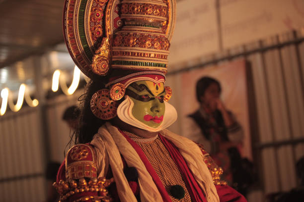
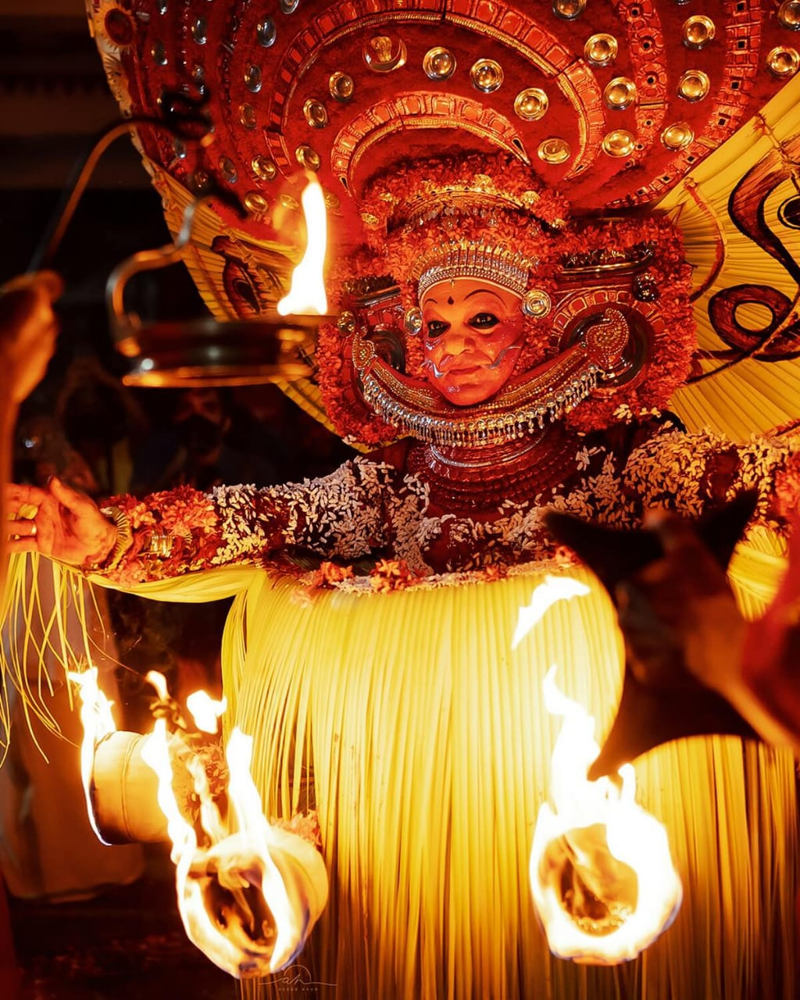
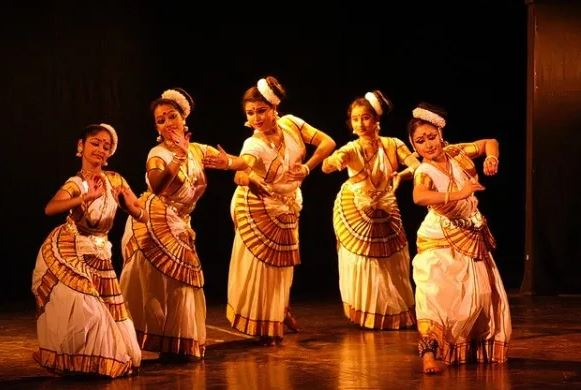
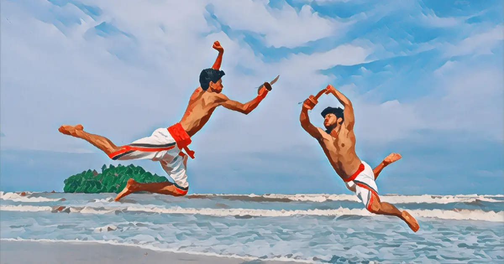
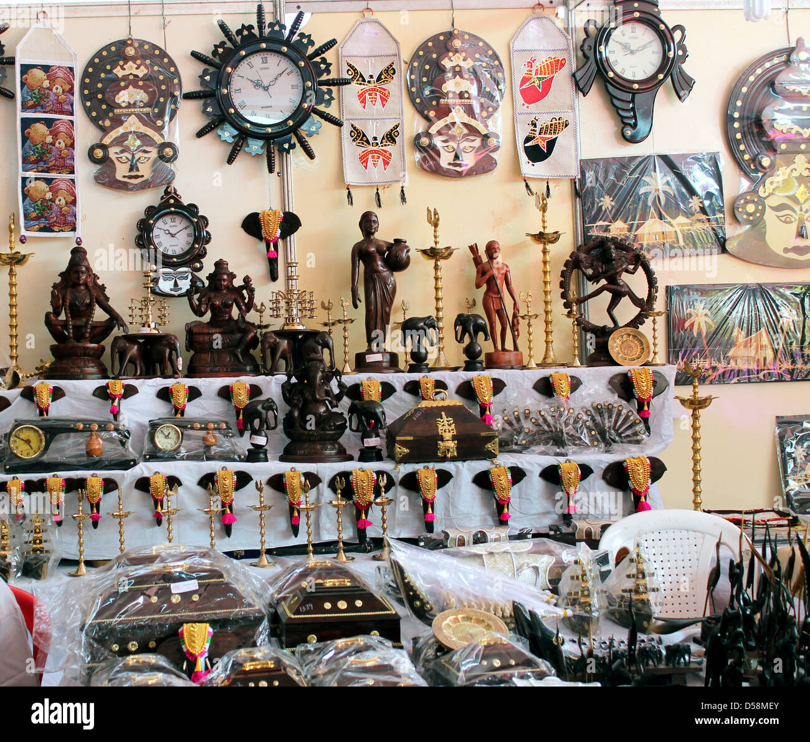

Kathakali is a traditional dance-drama known for its elaborate costumes, facial expressions, and intricate storytelling. The performances are conducted in various cultural centers like Kerala Kalamandalam in Thrissur, where artists bring to life mythological stories.
Click the links below to visit the locations on Google Maps:
Theyyam is an ancient ritual dance form performed in the northern regions of Kerala. It involves powerful performances and elaborate costumes that represent deities and mythological characters. Theyyam is typically performed in temples and open courtyards.
Click the links below to visit the locations on Google Maps:
Mohiniyattam is a classical dance form of Kerala that embodies grace, beauty, and feminine energy. It is traditionally performed by women and is characterized by its fluid movements and subtle expressions. The performances are usually conducted in cultural centers such as the Kerala Kathakali Centre in Kochi.
Click the links below to visit the locations on Google Maps:
Kalaripayattu is a traditional martial art form from Kerala that combines physical postures, combat techniques, and weaponry. It is a unique and ancient art that is practiced in several centers across Kerala, where enthusiasts learn the techniques under the guidance of trained masters.
Click the links below to visit the locations on Google Maps:
Kerala is renowned for its vibrant handicrafts, including wooden sculptures, coir products, and traditional Kasavu sarees. Many handicraft exhibitions are held across the state, where local artisans showcase their craft. These items reflect Kerala's rich cultural heritage and craftsmanship.
Click the links below to visit the locations on Google Maps: